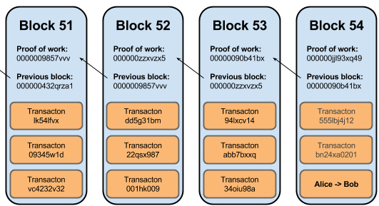

Block chain is a hot technology that allow us to make decentralized application. Decentralized application is an application that does not need a central server to verify users' data. For example, in a centralized applicaton, each student should have an unique student id to identify them from other student. Therefore, whenever a student want to do something in the application, the central server knows who you are by look at your student id and validate their information.
A decentralized application, on the other hand, does not need a central server to validate users' information. Instead, a public ledger is used and each user would have a copy of this public ledger. Therefore, every user can take part in the data validation process. Since the public ledger is immutable, if someone modified his or her ledger, it can be found easily as the data does not match others ledger.
This "public ledger" is a block chain. To understand block chain, we need to know what a block is. A block is a container that stores the transaction data. Beside data itself, each block should have a hash code and a hash code of the previous block. In short, a block should have at least three parameters, data, previous hash code and hash code. Blocks are linked together using hash code and thus it is called block chain.
Hash code of each block is generated by some hash function that takes all parameters of a block as the input. Hash funcation is deterministic. That means each set of parameters should be a unique hash code. If there are two identical sets of parameters, they should have the same hash code as well.
 An example of block chain.The above picture is an simple example of a block chain. The orange part is the transction data. "Previous block" is the hash code of previous block. "Proof of work" is the hash code of the block. You can see that the "Proof of work" of block 51 is identical to the "Previous block" of block 52 and so on so forth.
If you wish to know how to create your own block chain, check out my github blockchain repository. I implemented a simple block chain using python. Source Code